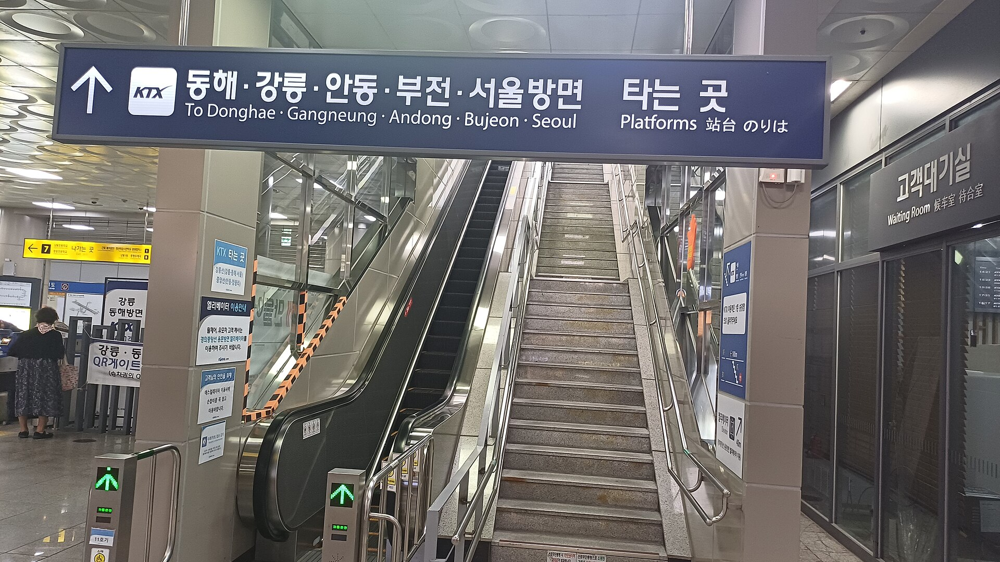
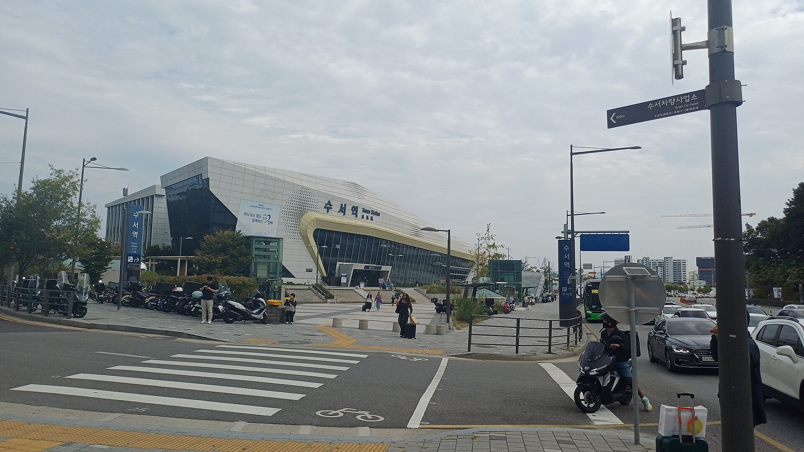

5차 국가철도망 600조원 건의, 영호남 대도시 잇는 고속철도 0개
고속열차 대부분 서울 기점, 부전~강릉 KTX-이음 하루 6회
목포~부산 새마을호 4시간40분, 달빛철도 예타 면제 2년 넘게 미확정
수서~평택 등 간선 병목 3곳 선로 증설 검토, 추정 11조원
AI경제저널=김갑봉 기자 | 국토교통부가 2026년 11월 13일 제5차 국가철도망 구축계획(2026~2035) 국민 의견수렴 행사를 열었다. 5차 계획에 넣어 달라고 시·도가 국토부에 건의한 철도사업은 약 300건, 총사업비는 600조원이다.
영호남 대도시를 직접 잇는 고속철도는 아직 없다. 고속열차 노선은 대부분 서울을 기점으로 뻗어 있고, 지방 대도시끼리 잇는 열차는 드물고 느리다.
건의 300건, 총사업비 600조원
600조원은 2021년 확정한 4차 계획 총사업비 119조8000억원의 5배다. 경기도는 사업 40개, 약 83조원을 건의하고 신규사업 투자를 100조원 이상으로 늘려 달라고 했다.
경북도는 사업 20개에 41조2990억원, 경남도는 노선 11개에 27조3922억원을 건의했다. 서울 동작구 전문건설회관 행사장에서 이상일 용인시장은 홍지선 국토부 장관에게 용인 철도 구상 자료를 직접 전달했다.
국토부 사전 설문에는 11월 12일 낮까지 9만714명이 답했다. 96.9%가 철도 투자 확대에 찬성했다. 수도권 거주자 60.6%는 수도권 우선 투자를, 비수도권 거주자 73.6%는 비수도권 우선 투자를 꼽았다.
김태병 국토부 철도국장은 11월 13일 고시 시점을 12월 말로 제시했다. 홍 장관이 후보자 시절인 9월 16일 인사청문회에서 밝힌 공청회 시점은 9월 말~10월이었다. 11월 15일까지 공청회 날짜는 발표되지 않았다.
서울에서 출발하는 고속열차
국내 철도망은 서울과 수도권을 중심으로 한 방사형 구조다. 경부·호남·전라·경전·강릉선 KTX는 주로 서울·용산·청량리역에서, SRT(Super Rapid Train, 수서고속철도)는 수서역에서 출발한다.

예외는 2025년 12월 30일 투입한 동해선 부전~강릉 KTX-이음이다. 하루 6회로 운행을 시작했고 평균 3시간54분 걸린다. 같은 날 중앙선 청량리~부전 KTX-이음 운행은 하루 6회에서 18회로 늘었다.
전현우 서울시립대 자연과학연구소 연구원은 2026년 2월 27일 남부 대도시 철도망을 짚었다. 그는 "초광역권 내 거점 도시, 즉 도로 연결은 활발한 도시 사이에서도 철도 연결이 비어 있다"고 했다.
목포~부산 4시간40분과 달빛철도
2025년 9월 27일 신보성~목포 임성리 82.5㎞ 철도가 개통했다. 목포~부전 새마을호 소요시간은 광주송정을 거치던 약 6시간50분에서 약 4시간40분으로 줄었다.
개통 당시 이 구간 열차는 새마을호 2회, 무궁화호 2회로 하루 4회였다. 국토부는 2030년께 광주송정~순천 전철화가 끝나면 목포~부산에 KTX-이음을 투입한다고 밝혔다.
달빛철도는 광주와 대구를 잇는 198.8㎞ 단선 전철이다. 총사업비는 2019년 국토부 산정 기준 4조5158억원이다. 2021년 4차 계획 확정 막판에 추가로 들어갔고, 2024년 1월 25일 특별법이 국회 본회의를 통과했다.
국토부는 2024년 9월 예비타당성조사(예타) 면제를 신청했다. 면제 여부는 2026년 10월 말까지 정해지지 않았다. 달빛철도는 아직 착공하지 않았다.
예타 가중치와 간선 병목 3곳
예타 종합평가 경제성 가중치는 2019년 4월 개편 때 수도권 60~70%, 비수도권 30~45%로 갈렸다. 수도권 사업 평가에서는 지역균형발전 항목을 없앴고, 비수도권은 그 가중치를 30~40%로 높였다.
기획예산처는 2026년 3월 10일 비수도권 인구감소지역 사업의 경제성 가중치를 5%포인트 낮추는 개편안을 발표했다. 지역균형 가중치는 5%포인트 올렸다.
김용석 대도시권광역교통위원장은 11월 14일 인터뷰에서 "5극 3특의 국가균형성장 이게 가장 큰 국정철학"이라고 말했다. 이어 "가능한 지방권의 투자를 좀 더 확대하겠다"고 했다.
그는 5차 광역교통시행계획에 들어온 사업 100여개의 사업비가 약 106조원이고, 그 가운데 수도권 몫이 약 75%라고 밝혔다.
국토부는 간선철도 병목 구간 3곳의 선로를 늘리는 방안을 5차 계획에 우선 반영하는 쪽으로 검토하고 있다. 수서~평택과 삼동~부발은 복복선(선로 4개), 의왕~천안은 3복선(선로 6개)으로 늘리는 안이다.
추정 사업비는 약 11조원이다. 이 가운데 수서~동탄은 수서발 고속열차와 GTX-A(Great Train eXpress-A, 수도권광역급행철도 A노선)가 함께 쓰는 선로다.
김태병 국장은 10월 29일 제주에서 열린 한국철도학회 추계학술대회에서 "예산이 한정돼 있기 때문에 일단 3개부터 해볼 것"이라고 말했다.

시간표부터 짜는 독일 철도
독일 연방교통디지털인프라부(BMVI)는 2020년 6월 30일 철도 목표 시간표 3차 초안을 발표했다. 이름은 도이칠란트탁트(Deutschlandtakt, 독일 통합 정시 운행체계)다.
원칙은 "시간표 먼저, 인프라 계획은 그다음(Erst der Fahrplan, dann die Infrastrukturplanung)"이다. 목표 운행 시각을 먼저 정하고, 그 시각을 맞출 선로는 나중에 계획한다.
함부르크~베를린, 베를린~라이프치히, 프랑크푸르트~뷔르츠부르크~뉘른베르크 축에는 장거리 열차를 30분마다 1대 이상 넣었다. 에르푸르트 같은 크노텐(Knoten, 거점역)에는 정각과 30분에 열차가 모이게 짰다.
3차 초안은 뷔르츠부르크~뉘른베르크 소요시간을 53분에서 30분으로 줄이는 목표를 세웠다. BMVI는 이 운행 구상으로 근거리와 장거리 철도 승객을 두 배로 늘릴 수 있다고 밝혔다.
독일 연방정부는 2025년 7월 9일 연방의회 답변에서 거점역 시각을 담은 단계별 최종 계획은 아직 없다고 밝혔다.
참고문헌
기관 자료
- "Zielfahrplan Deutschlandtakt, Informationen zum dritten Gutachterentwurf", 독일 연방교통디지털인프라부(BMVI), 2020.6.30., https://www.allianz-pro-schiene.de/wp-content/uploads/2020/06/200630_bmvi_präsentation-zielfahrplan-deutschlandtakt.pdf
- "Umsetzungsstand und Aufwendungen für den Deutschlandtakt im Rahmen des Bundesverkehrswegeplans 2030"(Drucksache 21/838, 연방정부 답변), 독일 연방의회, 2025.7.9., https://dserver.bundestag.de/btd/21/008/2100838.pdf
- "앞으로의 철도, 어떤 모습이면 좋을까요?", 정책브리핑, 2026.11.10., https://www.korea.kr/multi/visualNewsView.do?newsId=148975355
언론보도
- "국가철도망 의견수렴에 지자체 요구 쏟아져… 철도투자 확대·핵심 노선 반영 촉구", 한국철도일보, 2026.11.13., https://www.korearailroad.kr/news/articleView.html?idxno=217349
- "제5차 국가철도망 계획, 국민 의견 듣는다…13일 의견수렴", 뉴스핌, 2026.11.8., https://www.newspim.com/news/view/20261106001059
- "박승원 광명시장, 국토부 행사 찾아 '신천~하안~신림선' 반영 촉구", 아시아경제, 2026.11.13., https://view.asiae.co.kr/article/2026111316575559872
- "이상일 용인시장 '경기남부광역철도 등 3개 철도 노선, 국가계획 반영해야'", 서울경제, 2026.11.13., https://www.sedaily.com/article/20114087
- "5차 철도망 '600조 청구서'…나눠주기 아닌 균형발전 잣대로", 매일신문, 2026.11.13.(11.15. 수정), https://www.imaeil.com/page/view/2026111311020303556
- "83조 경기철도망, 정부 선택만 남았다", 인천일보, 2026.11.15., https://www.incheonilbo.com/news/articleView.html?idxno=1336859
- "경남도, 27조 규모 11개 철도망 국가계획 반영 건의", 헤럴드경제, 2026.11.13., https://biz.heraldcorp.com/article/10936287
- "국민 97%가 '철도 투자 늘려야'…국토부 '확대 검토'", 헤럴드경제, 2026.11.13., https://biz.heraldcorp.com/article/10936378
- "'철도 부족하다' 66%…5차 국가철도망, 수도권·비수도권 투자 우선순위 팽팽", 뉴스웍스, 2026.11.13., https://www.newsworks.co.kr/news/articleView.html?idxno=903047
- "KTX-이음 타고… 서울·강릉∼부산 '3시간대'", 세계일보, 2025.12.15., https://www.segye.com/newsView/20251215515034
- "'창원에서 광주 가려면 천안 거쳐가야 한다' 사실 반 거짓 반", 오마이뉴스, 2026.2.27., https://www.ohmynews.com/NWS_Web/OhmyFact/at_pg.aspx?CNTN_CD=A0003210612
- "보성~목포 철도 27일 개통⋯전남 서남해안 연결", 이투데이, 2025.9.23., https://www.etoday.co.kr/news/view/2509425
- "해남군, 해남역 신설 철도 개통 기념식 개최", 메트로서울, 2025.9.30., https://www.metroseoul.co.kr/article/20250929500576
- "달빛철도, 261명이 만든 특별법도 못 뚫었다…'예타 면제' 2년 넘게 외면", 매일신문, 2026.10.14., https://www.imaeil.com/page/view/2026101414494325428
- "달빛철도 특별법 통과 2년 9개월…대구·광주 경제계 '예타 면제 결단하라'", 경북매일, 2026.10.29., https://kbmaeil.com/article/20261029500628
- "GTX-D 결국 '김부선'…옵션으로 '김용선' 부기", 뉴데일리, 2021.6.29., https://biz.newdaily.co.kr/site/data/html/2021/06/29/2021062900160.html
- "대구-광주 잇는 '달빛고속철도' 특별법, 국회 본회의 통과", 뉴스핌, 2024.1.25., https://newspim.com/news/view/20240125000684
- "예비타당성, 수도권·비수도권 분리해 평가···제도 도입 20년만 전면 개편", 경향신문, 2019.4.3., https://www.khan.co.kr/article/201904032242005/amp
- "경제성→지역 균형발전 무게추… 조사기간 1년 이내로 단축", 서울신문, 2019.4.4., https://m.seoul.co.kr/news/2019/04/04/20190404005004
- "20년만의 예타개편…균형발전평가, 수도권 없애고 지방 강화", 뉴시스, 2019.4.3., https://www.newsis.com/view/NISX20190403_0000607845
- "인구감소지역 예타는 '경제성' 덜 본다…1000억 미만 SOC는 '예타 면제'", 아시아경제, 2026.3.10., https://view.asiae.co.kr/article/2026030918124485845
- "발표 앞둔 5차 국가철도망…김용석 대광위원장 '지방 투자 늘린다' [인터뷰]", 한국경제TV, 2026.11.14., https://www.wowtv.co.kr/NewsCenter/News/Read?articleId=A202611130054
- "[단독] 수서-평택, 의왕-천안, 삼동-부발 선로 더 깐다…5차 철도망 반영", 철도경제신문, 2026.11.2., https://www.redaily.co.kr/news/articleView.html?idxno=18079
- "[단독] 수서~평택 등 '병목구간 3곳' 노선 늘린다", 한국경제, 2026.11.10., https://www.hankyung.com/article/2026111084441
- "홍지선 국토장관 후보자 '제5차 철도망 구축계획 연내 고시' [청문회]", 철도경제신문, 2026.9.17., https://www.redaily.co.kr/news/articleView.html?idxno=17583
- "제5차 국가철도망, 종합평가·공청회 거쳐 12월 말 고시", 철도경제신문, 2026.11.13., https://www.redaily.co.kr/news/articleView.html?idxno=18198
[사진 출처]
- [사진 출처]
- [사진 1] Striker9498, 「20260729 상봉역 중앙선KTX 강릉선KTX 타는곳 에스컬레이터 및 계단.jpg」(2026.7.29. 촬영), CC0(퍼블릭 도메인 헌정), 위키미디어 공용, https://commons.wikimedia.org/wiki/File:20260729_상봉역_중앙선KTX_강릉선KTX_타는곳_에스컬레이터_및_계단.jpg
- [사진 2] Striker9498, 「20260924 KTX 수서역 역사.jpg」(2026.9.24. 촬영), CC0(퍼블릭 도메인 헌정), 위키미디어 공용, https://commons.wikimedia.org/wiki/File:20260924_KTX_수서역_역사.jpg